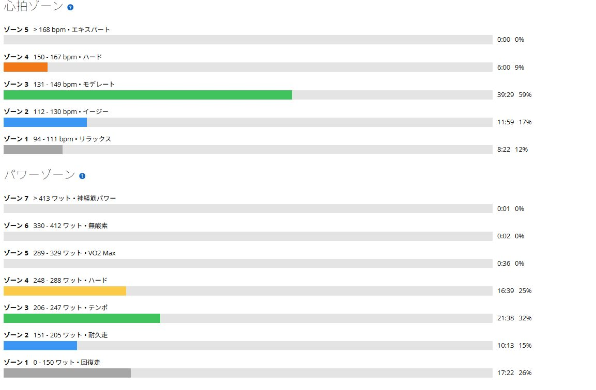

暑い室内でSST下限20分×2。243Wを揃えて見えたローラーの役割
前回の暑熱SSTは1本目を252Wで20分、2本目を235Wで10分やって終了した。脚はまだ動きそうなのに呼吸が先に苦しくなり、SSTの合計時間は30分だった。
今回は狙いを変えた。255Wへ戻そうとせず、SST下限の242〜243Wで20分×2を最後まで揃える。結果は2本とも243W。9W下げたことで合計40分まで伸ばせた。

前回は2本目を10分で終了
前回は室温30℃を超える部屋で1本目を252W、2本目を235Wで回した。1本目は完遂したものの2本目は10分で終了。脚より先に呼吸が苦しくなった。
そこで今回は出力の高さより、SSTとして踏み続ける時間を優先した。FTP設定275Wに対して243Wは約88％。下限寄りでもSSTの範囲にはきちんと入っている。
2本とも243Wで揃えた
1本目は20分を平均243W、平均心拍139bpm、平均ケイデンス85rpm。最初から楽ではなかったが、前回の252Wより明らかに余裕があり、最後まで同じペースで回せる範囲に収まっていた。
5分のレストを挟んだ2本目も20分を平均243W。平均心拍は146bpmまで上がり、暑さと疲労は数字にも出ている。それでも出力もケイデンスも大きく崩れず、2本目まで揃えられた。75kg基準では3.24W/kgになる。
暑さ慣れより、出力設定が大きかった
最近は暑い外ライドや室温30℃を超えるローラーが続いている。体が暑さへ少しずつ慣れてきた可能性はある。ただ今回40分まで伸ばせた一番の理由は、暑熱適応より出力を適切に下げたことだと思う。
前回は252Wの1本目を終えたあと、2本目を続けられなかった。今回は243Wまで下げて2本を完遂した。出力を9W落とすことでSSTの合計時間は30分から40分へ増えた。今の自分には、こちらの方が価値がある。

室内では一定ペースを最後まで回す
外の方がパワーは出しやすい。登りには勾配があり、景色も変わる。走行風もあるので、同じ242Wでも室内より軽く感じる。
一方で室内ローラーは景色も勾配も変わらず、暑さもこもる。その代わり一定出力を崩さず、決めた時間を最後まで回す練習には向いている。外では高い出力を出す。室内では一定ペースを積み上げる。単純に数字を比べず、役割を分けた方が練習全体として分かりやすい。
まずは243Wで時間を伸ばす
当面は242〜243Wを基準にする。すぐ255Wへ戻すのではなく、まずは同じ20分×2を安定して揃える。その後は25分×2、30分×2、40〜45分連続、最終的には60分連続という流れも見えてくる。
もちろん毎回すぐに時間を増やす必要はない。同じメニューで心拍の上がり方が小さくなる、ケイデンスが最後まで安定する、終わったあとに少し続けられそうになる。そうなったところで次へ進めばいい。
今回やってみて思ったこと
以前はSSTなら255Wくらいでやらないと意味が薄い気がしていた。でも243Wでも十分きつく、40分揃えれば負荷はきちんと残る。室内で毎回高い数字を追い、途中で崩れるより、少し低めの出力を最後まで揃える方が今の自分には合っている。
目標はローラーで1時間300W。今の243Wだけを見ると遠く感じるが、1時間300Wは短時間の高出力だけでは届かない。一定ペースを崩さず続ける力を下から積み上げる必要がある。今日は前回できなかった20分×2を揃えた。それで十分前進ということにする。
自分用メモ
- メニューSST下限20分×2 / レスト5分
- 結果1本目243W・心拍139bpm・85rpm / 2本目243W・心拍146bpm・84rpm
- 全体約1時間7分 / 平均202W / NP219W / IF0.796 / TSS69.8
- 暑さ平均31.2℃ / 最高32.0℃ / 推定発汗量約1.1L
- 基準FTP275Wに対して約88％ / 75kg基準で3.24W/kg